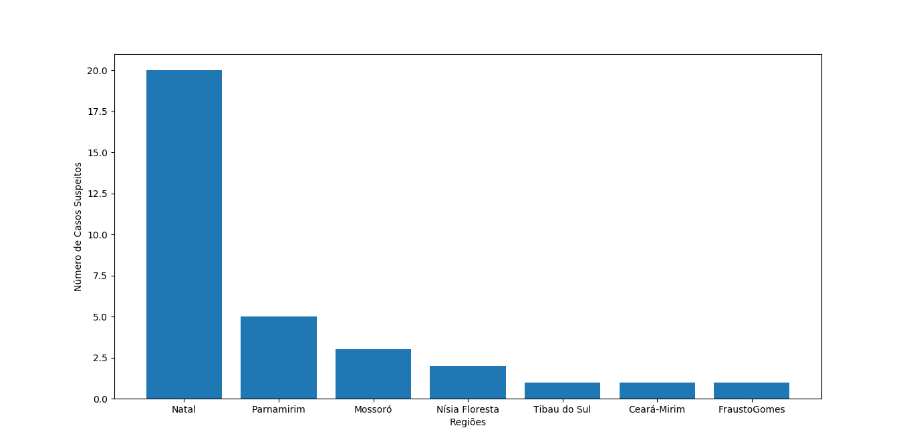

Casos COVID19 no Rio Grande do Norte
| Lugares com casos suspeitos |
Quantidade de Casos Suspeitos |
| Natal |
20 |
| Parnamirim |
5 |
| Mossoró |
3 |
>
Nísia Floresta |
2 |
| Tibau do Sul |
1 |
| Ceará-Mirim |
1 |
| Frutuso Gomes |
1 |
O número foi atualizado pela Secretaria Estadual de Saúde nesta terça-feira (17) e representa um aumento em relação ao último boletim divulgado pela pasta na sexta-feira (13), quando havia 17 casos suspeitos no estado. Os dados são de até às 20h desta segunda-feira (16).
Estatísticas
